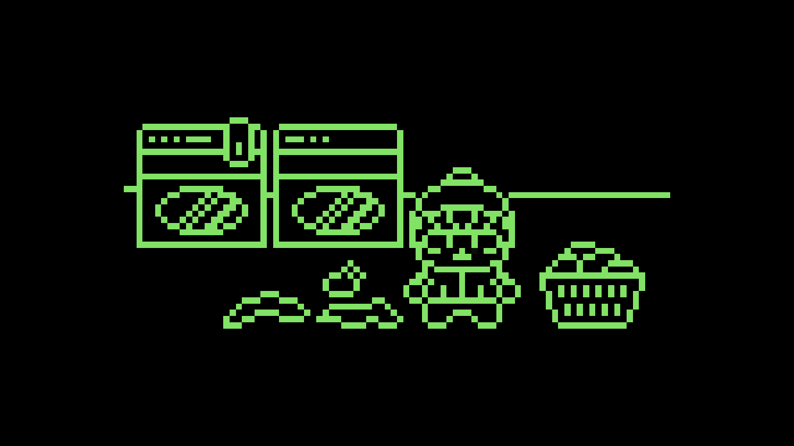

In the laundry room...

You go look for something to wear.
You don't have much that's left thats clean. You've been putting off doing your laundry for a while now and you are way behind on it. You need to do your laundry today or you wont have anything to wear to class. You put a load in the machine and wait while it finishes. Could you be working on your essay while its running? Probably, but you don't have the energy to multitask right now. After it finishes washing and drying you put your clothes away. You were so behind on laundry you still have another load's worth to put in, but you figure that's good enough for now. What do you do now that that's done?